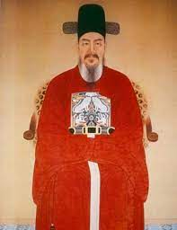

|  | 이력서 | |||
|---|---|---|---|---|
| 이름 | 이순신 | 나이 | 54세 | |
| 주소 | 서울시 중구 을지로 18길 19 | 호주 | 워킹 홀리데이 1년 | |
| 본적 | 조선 한성부 건전동 | 전화 | 031-333-2222 | |
| 주민등록번호 | 450418-1122916 | 애인 | 여친은 있으나 애인은 아님 | |
| 연락처 | 010-2031-0293 | 가족관계 | 아내, 아들 넷 | |
| 학력사항 | ||||
| 년 | 월 | 일 | 학교 | 비고 |
| 65 | 2 | 결혼 | 비고 | |
| 73 | 2 | 훈련원 별과에 응시, 낙마하여 낙방 | 비고 | |
| 76 | 2 | 권지훈련원봉사 | 비고 | |
| 76 | 2 | 함경도 동구비보권관 | 비고 | |
| 79 | 2 | 한성훈련원 봉사 | 비고 | |
| 79 | 2 | 충청도 병마 절도사 군관 | 비고 | |
| 80 | 10 | 전라 좌수영 관내 종 4품 수군만호 | 비고 | |
| 82 | 2 | 파직 | 비고 | |
| 82 | 1 | 복직 | 종8품 | |
| 83 | 2 | 조산보 만호 | 종 4품 | |
| 89 | 2 | 정흡 현감 | 종 6품 | |
| 91 | 2 | 전라좌도 수군절도사 | 정 3품 | |
| 93 | 8 | 삼도수군통제사 | 비고 | |
| 자격증 | ||||
| 년 | 월 | 일 | 학교 | 비고 |
| 1504 | 4 | 덕풍부원군 추봉 | 의정부 사간원 | |
| 94 | 11 | 좌의정 추종 | 의정부 사간원 | |
| 95 | 06 | 영의정 추종 | 정조 17년 | |
| 97 | 09 | 한국인이 존경하는 위인 1위 선정 | 국토관리청 | |
| 98 | 07 | 선박 항해사 1급 | 전라 좌수영 | |
| 99 | 02 | 선박 설계 기술사 | 조선 산업인력 관리공단 | |
| 경력사항 | ||||
| 기간 | 소속 | 사항 | ||
| 1592년 5월 | 전라 좌수영 | 목포와 합포에서 승리 | ||
| 1592년 5월 | 전라 좌수영 | 전진포 승리 | ||
| 1592년 6월 | 전라 좌수영 | 당포해전 승리 | ||
| 1592년 6월 | 전라 좌수영 | 율표해전 승리 | ||
| 1592년 7월 | 전라 좌수영 | 한산도 해전 승리 | ||
| 1592년 7월 | 전라 좌수영 | 안골포 해전 승리 | ||
| 거북선 설계, 개발 및 건조 | ||||
| 옥포해전 승리 | ||||
| 13척의 배로 133척 작살 가능 | ||||
| 영의정과 친분 찐함 | ||||